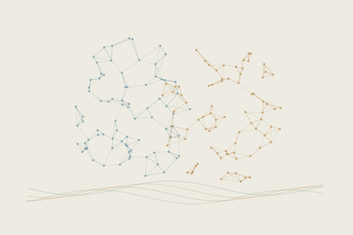

How we receive information
Ongoing collaborative research

How does the way we receive sensory information change the use of shared neural systems?
Two processing conditions may involve overlapping neural systems while differing in how those systems are used. This project separates questions about shared activity patterns from questions about how they unfold over time and interact across networks.
Visual and auditory fMRI workflows combine multivoxel pattern comparisons, representational relationships, hidden-state descriptions and connectivity modelling. Each offers a different perspective, and each has its inputs and assumptions checked separately.
- My role
- Event and time-series alignment, computational workflows, checks across analysis branches and visual reporting; coordinating analysis tasks within the team.
- Methods
- fMRI · MVPA · RSA · hidden Markov models · connectivity modelling
- Setting
- Collaborative fMRI research
Internal conditions, analysis outputs and unpublished results remain private.